Who am I?
I’m a first-year student at the University of Waterloo studying Systems Design Engineering at the University of Waterloo. I’m interested in how technology intersects with society and how good design, although unnoticeable at times, can make foreign and innovative solutions feel like a natural fit.
I’ve been designing as a means of problem solving for long as I can remember, founding a graphic design business in the thick of the pandemic, working as a product designer for a non-profit and engineering a handful of side projects along the way. I am client-oriented and driven by experiences. I believe that the best solutions are found when you pair a strong understanding of the problem and its affected users with an optimistic and personal approach to design.
I’ve been designing as a means of problem solving for long as I can remember, founding a graphic design business in the thick of the pandemic, working as a product designer for a non-profit and engineering a handful of side projects along the way. I am client-oriented and driven by experiences. I believe that the best solutions are found when you pair a strong understanding of the problem and its affected users with an optimistic and personal approach to design.
Some of my recent experience
UW Blueprint
Jan. 2024 - PresentBuiding a donation portal for the French NPO, Don Efficace, leading the design of interfaces and interactions for donor and admin user types.
TimePlay Inc.
Jan. 2024 - Apr. 2024Led the user experience design of a mobile lottery game, creating wireframes, JIRA tickets and working cross-functionally with developers.
Target Alpha STC.
June 2022 - June 2023Directed social media planning and an informational video series for Canada's largest youth personal finance organization.

Graphic Design Business Owner
May 2020 - Oct. 2022Worked with three of the largest Prep. schools in the GTA to create university commitment graphics for their players.